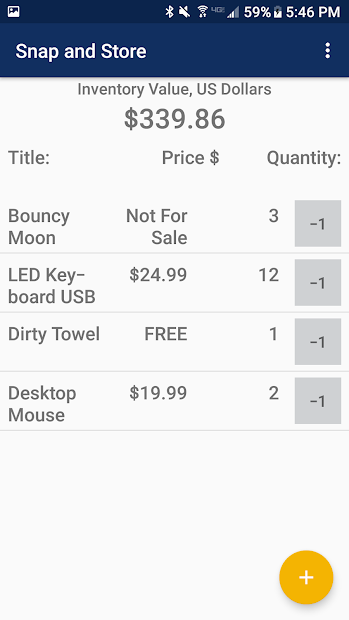

Joshua Doucet
Software Developer
Code Portfolio
Jimmy's Lefties
A web application for finding unpaired and mismatched shoes. Jimmy's Lefties scrapes shoe listings from multiple sites and centralizes them in one location. Inpired by amputees wanting to easily find a single shoe
- Built using Python and the Django framework.
- Uses the BeautifulSoup module for web scraping to acquire shoe listings on other sites.
- Uses the plotly module for bar chart data visualization
- Uses Django's built-in functionality for user authentication
- User search logging using a Django model
| Home page |
Search for shoes with phrase "New Balance" |
Musiccharts MySQL Database
The music charts database project aimed to take a .CSV file of music chart data and convert it into a third normal form relational database using MySQL. The input data in the CSV file contained rows which identify a specific music track that ranked on a Billboard 100 chart for a given year in the range years 1964-1975. The columns represented details about a track such as title, artist, writers, year, record label, date the track entered the Top 100 charts, and the ranking(s) the track had on the top 100 charts. The problem with the input data was that it was not in third normal form which is desirable in a relational database.
- Built using MySQL Server 8
- An entity relationship diagram was built to organize the data
- The project focused on normalizing the input data so that it is better fit for a relational database
| ERD for the musiccharts DB |
Pseudo PL20 Language Compiler
An application that compiles "PL20" source code into "quads" which are executed using a pseudo interpreter built using C++ code. The application takes a "PL20" source code file as input. Then, the source code is tokenized using lexical analysis that is based on a deterministic finite automata (DFA). After tokenization, the tokens are parsed using syntax analysis based on context-free grammars (CFGs) that ensure proper code syntax. Once the code is verified to be syntactically correct, "quad" codes are generated based on the sequence of tokens. The quads resemble assembly code instructions with three arguments. Lastly, the quads are fed into the pseudo interpreter which reaads the quads and executes the corresponding C++ operations.
- Built using C++ and Visual Studio 2019
- Focuses on the fundamentals of compiler design
- Utilizes deterministic finite automaton (DFA) and context-free-grammars (CFG) structures to "compile" PL20 source code into runnable C++ code.
A PL20 program for input |
An ouput of the PL20 program |

Pet Finder App
A web application for getting pets into new homes. Individuals and organizations are able to list pets that are available for adoption, and other individuals who are looking to adopt can search the web application for pets based on several kinds of pet search criteria. Furthermore, individual are able to take a "pet quiz" which helps them determine what kind of pet may be an ideal fit for them
- Built using the Ruby on Rails framework within a Docker container running a Cloud9 IDE image
- Built using Agile, TDD, and BDD methodologies in a team of 5 developers while using Git and GitHub for version control
- Uses rails models to store pet and user information in a SQLite3 database
- Uses the Google Maps API to display static maps of a listed pet's location
| Home page |


DungeonBrawl
A Windows Forms turn-based fighting game where HEROES are put up against ENEMIES. You play as the heroes trying to defeat never-ending waves of enemies. Your objective is to defeat as many waves of enemies as possible before your three fighters have been downed and become unable to battle. Each time you defeat all three enemies, you will proceed to the next level. Upon entering a new level you will be presented with a new wave of enemies that have full health HP and full special points SP.
- Built using C# and Windows Forms within Visual Studio
- The application is event driven and updated the UI when the player performs game actions such as attacking and defending
- Each character type utilizes class inheritance to ensure all character types have the same base fields and actions. Each character class type is given different stats such as health points, special attack points, strength, and intellect.
| A game in progress |
How to play the game |
Minesweeper Clone
A Window Forms game that mimics the classic Minesweeper game. Find and mark all 10 mines to win the game.
- Built using C# and Windows Forms within Visual Studio
- Tracks lifetime game stats such as win loss ratio and average game time
An in progress game |
Winning a game |
Movie Journal
An Android app that utilizes TMDb to help you find and keep track of your favorite films. Search and view popular movies, read reviews, watch trailers, and make a list of your favorites!
- Built using Java and Android Studio
- Fetches nmovie data from The Movie Database API in an asynchronous manner
- Stores user favorite movies in a SQLite3 database
- Optimized for devices of different screen sizes
| Searching for movies with "star" in the title |
Showing user favorited movies |
Showing the most popular TMDB movies |
Snap and Store
An Android app that allows users to create an inventory of objects. The database can be used to inventory personal belongings, items in storage, or a list of items that will be for sale. The name of an item, how many you have, the name of manufacturer, as well as the value/cost of the item, and an image of the object is all useful information that Snap and Store keeps track of for users.
- Built using Java and Android Studio
- Stores user items in a local SQLite3 database
- Allows users to store photos in the local DB
- Calculates the total value of all items in inventory
| Show all items in storage  |
Adding a new item (1 of 2) |
Adding a new item (2 of 2) |
Blackjack
A clone of the Blackjack card game where players compete against the dealer to see if they can get as close to the card value of 21 without going over and busting. A gamified betting system is imcluded in the game.
- Built using Python within the CodeSkulptor browser IDE
- Utilizes the simplegui module
- Displays card images by drawing a subset of pixels from a larger image that contains all the card images
| Betting $325 on a game |
Player losing the bet |